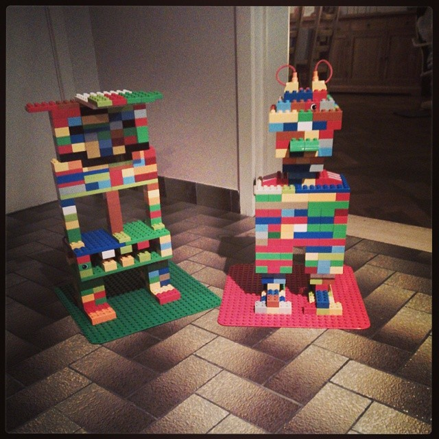

reveal.js is a framework for easily creating beautiful presentations using HTML. You'll need a browser with support for CSS 3D transforms to see it in its full glory.
A collection of related or interconnected pages or documents written in HTML typically served from a single web domain.
A page containing (a) collection(s) of content
vs.
A detail page with a single content item
A webpage consists of a set of components
Recurring components
Header, Footer, Navigation,...
Specific components
Call to actions, content fields, etc.
Call to actions, content fields (title, body),...
The arrangement of the different components allowing to convey meaning in a sensical way.
The arrangement is determined by the context such as:
The structural design of shared information environments
the art and science of organizing and labelling websites, intranets, online communities and software to support usability and findability
You can only build, if you have an idea of what you are building.
A flurry of kittens